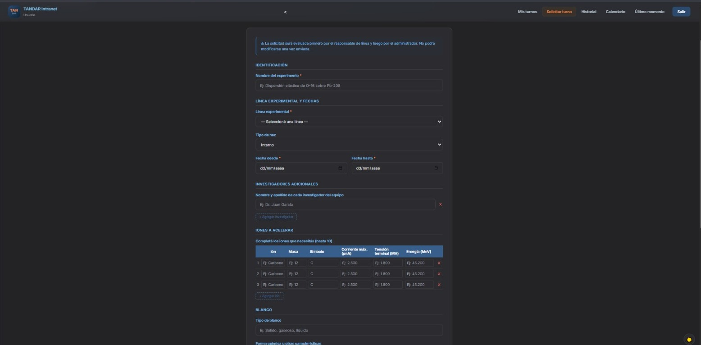
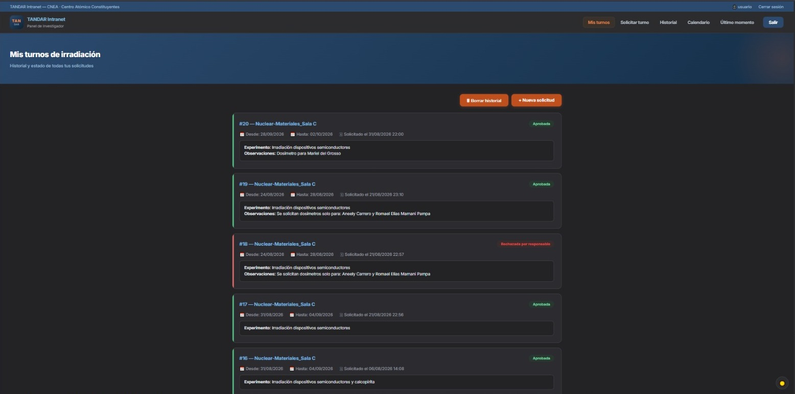
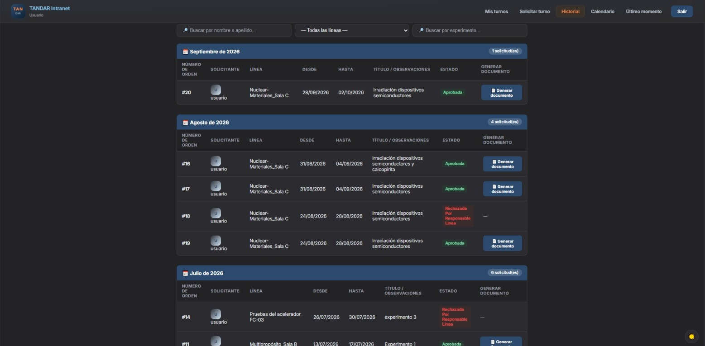

Centralización
La información del proceso se reúne en un único sistema web.
TANDAR-CNEA es una plataforma web desarrollada para centralizar, ordenar y digitalizar el proceso de solicitud, revisión y gestión de turnos experimentales.
TANDAR-CNEA busca modernizar la gestión de turnos experimentales mediante una plataforma única, con información centralizada y un flujo de trabajo adaptado a los distintos participantes.
El sistema integra solicitudes, disponibilidad de fechas, líneas experimentales, revisión por responsables, intervención de Radioprotección y administración de los turnos.
La información del proceso se reúne en un único sistema web.
Las solicitudes y sus estados pueden seguirse durante el proceso.
Cada perfil participa en las etapas que corresponden a su función.
El calendario permite visualizar y gestionar la ocupación de turnos.
La evolución del proyecto incorporó nuevas herramientas y un flujo más completo para la gestión de cada solicitud.
Creación y seguimiento de solicitudes con información organizada para las distintas etapas del proceso.
Ya permite visualizar la ocupación de turnos y se está trabajando en un calendario más específico, con una presentación visual más clara.
Paneles diferenciados para administración, responsables de línea, usuarios y el flujo específico de Radioprotección.
El rol y su flujo específico continúan en desarrollo, incluyendo mejoras sobre la Página 2.
Se implementará un sistema visual de colores para identificar y diferenciar cada línea de haz de forma rápida.
Seguimiento visual de solicitudes, líneas experimentales y estados de aprobación.
Se mejorará el flujo de propuestas de modificación para hacerlo más claro y consistente para todos los roles.
Se automatizará la carga de categorías y personal para simplificar y ordenar la información de la Página 2.
Capturas reales del sistema actual, mostrando el proceso de solicitud y el seguimiento de los turnos.
Carga de la información necesaria para registrar un experimento y solicitar una fecha de irradiación.

Ver imagen completa ↗Seguimiento de solicitudes, fechas, experimentos y estados de aprobación.

Ver imagen completa ↗Visualización del historial y del estado de cada solicitud dentro del sistema.

Ver imagen completa ↗La solicitud atraviesa diferentes instancias hasta llegar a la confirmación del turno.
El usuario carga la información necesaria para solicitar un turno.
El responsable revisa la solicitud y participa en su aprobación.
El flujo específico continúa en desarrollo y se incorporarán mejoras sobre la Página 2.
La administración gestiona el estado final y la disponibilidad.
La información queda consolidada para la realización del turno.
La plataforma se construye con tecnologías web y una arquitectura orientada a mantener el sistema bajo control.
La arquitectura actual permite continuar incorporando mejoras sin perder el foco en el flujo principal.
Construcción del flujo principal y gestión de usuarios.
Incorporación de la visualización de ocupación de turnos.
Calendario más específico, mejoras visuales, historiales y nuevos ajustes de flujo.
Finalización prevista para mediados de octubre, con mejoras de Radioprotección y automatización.
Versión 3.0 · Objetivo de finalización: mediados de octubre de 2026.